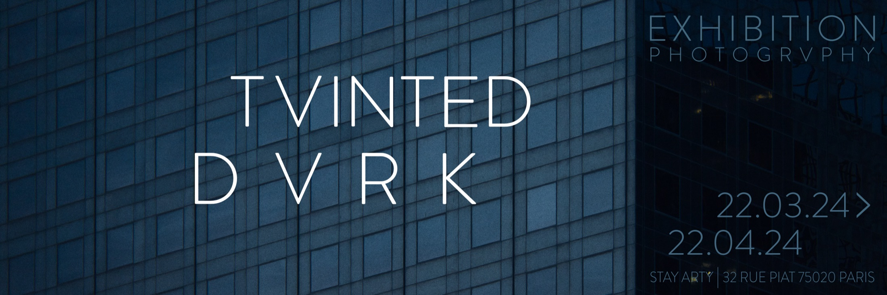
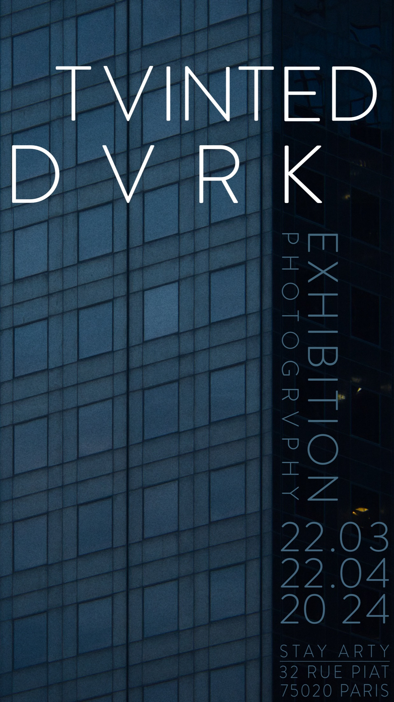

Exposition photo / STAY ARTY
TVINTED DVRK
Exposition photographique pensée comme une série cohérente: choix des images, tension visuelle, rythme d'accrochage et présence graphique.

Image
Travail autour d'une esthétique sombre, urbaine et directe.
Présentation
Sélection et mise en lecture dans un contexte d'agence et d'exposition.
Intention
Un langage urbain nocturne, frontal.
TVINTED DVRK fonctionne comme une séquence froide et minérale. Les images s'appuient sur le verre, le béton, le reflet et la verticalité urbaine pour créer une tension entre architecture et paysage intérieur.
La page garde cette atmosphère: surfaces sombres, halos plus froids et rythme éditorial resserré, tout en conservant la précision et la sobriété du portfolio.
Séquence visuelle


